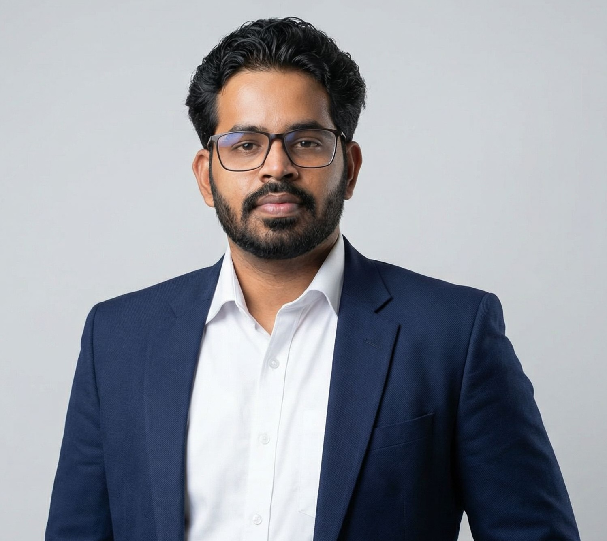

Vindula Athukorala
# Senior SRE Professional | AWS | K8s | Linux
- AWS
- Azure
- GCP
- Kubernetes
- Docker
- CI/CD
- Terraform
- Python
- Bash

## About Me
Hello There!
I'm a senior SRE professional with 7+ years of experience in building and running secure, scalable AWS infrastructure for mission-critical applications. Having worked across globally recognised organisations, including WSO2, Pearson, Axinom, and Yenlo, I bring enterprise-grade engineering standards to every engagement. My core focus areas are AWS Infrastructure Architecture, Cloud Security, Site Reliability Engineering and Networking.
Technical expertise:
- Iac - Terraform
- CI/CD tools - Azure DevOps, GitHub Actions, GitLab
- GitOps: ArgoCD
- Cloud Providers: Amazon Web Services (AWS), Microsoft Azure
- Containerization: Docker, Kubernetes, AKS, EKS
- Configuration Management: Ansible, Helm, Puppet
- Scripting: Bash, Python
- Version Control Systems - Github, Bitbucket, Azure DevOps, Gitlab
- Linux administration
- Service delivery tool - Service Now, JIRA
- Observability - Prometheus, Grafana, ELK
- Incident response tools - PagerDuty, Opsginie
Experience:
- Designing and implementing large-scale production infrastructure in AWS using Terraform.
- Deploying and managing highly available, scalable Kubernetes deployments.
- Develop automation scripts using Bash and Python.
- Incident management and resolution.
- Deploying, managing, and troubleshooting micro-service deployments.
- Linux systems administration.
- Cloud network configuration and troubleshooting including VPC routing, S2S VPN, ALB/NLB, CloudFront
## Work Experience
-
(HEAD -> present) November 2024 - Present
Managed Services Engineer
@ Yenlo Lanka (PVT) LTD
Provide 24x7 support for WSO2 and Boomi customer deployments. Troubleshoot and resolve customer deployment issues.
-
June 2023 - November 2024
Senior DevOps Engineer
@ Axinom (PVT) LTD
- Provision highly available and scalable infrastructure in Azure, GCP with Terraform.
- Manage and provision highly available kubernetes clusters (AKS, GKE).
- Manage internal and product deployments.
- Design and implement CI/CD pipelines with Azure DevOps.
- Write automation scripts with Python and Bash.
-
September 2020 - June 2023
Senior Systems Engineer
@ WSO2 Lanka (PVT) LTD
- Design, setting up and managing WSO2 managed services customer deployments on cloud and on-premise.
- Use automation tools to deploy WSO2 application.
- Mentor and guide junior engineers.
- Setting up and managing WSO2 public cloud offering related infrastructure.
- Proactively monitoring infrastructure resources and services in order to provide 99.99% guaranteed service uptime by 24x7x365 support.
- Provide migration support for infrastructure.
-
January 2019 - September 2020
Associate Application Engineer (DevOps)
@ Pearson Lanka (PVT) LTD
- Driving a DevSecOps approach.
- Focus on automation and tool development.
- Driving Pearson's cloud controls.
- Interface effectively with the network engineering teams to implement security solutions and controls.
- Maintain AWS accounts on-boarded to PCS
- Create new AWS accounts for applications and on-board those accounts to PCS
- Deploy application on AWS and Implement jenkins CI/CD
-
January 2018 - December 2019
Intern - Application Engineering (DevOps)
@ Pearson Lanka (PVT) LTD
- Cloud environments: AWS
- CI/CD tools: Jenkins, Rundeck
- Scripting: Shell, Python
## AWS & K8s Consultation
# Available for specialized architecture, infrastructure automation, and optimization consulting on AWS and Kubernetes.